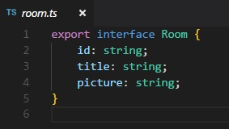
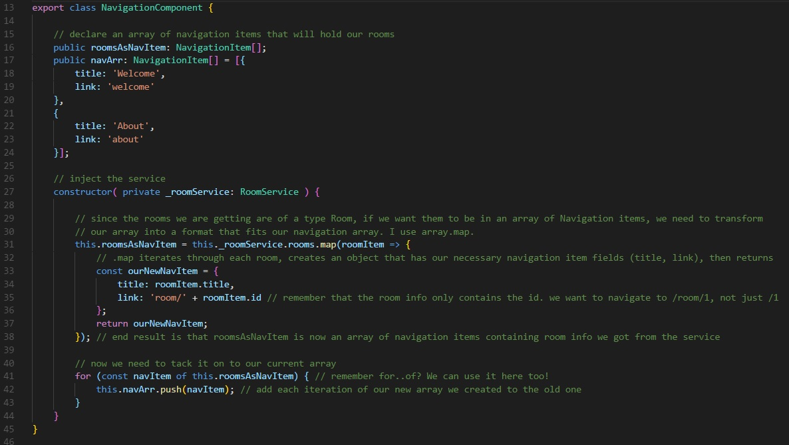

Earlier we tackled creating a navbar in our navigation component. Now our goal is to take the rooms we declared in the room service and add them to our navbar.
Let's go into our navgiation.component.ts. You'll see the testing nav points we added earlier. Change those up to include both a welcome page and about page. Make sure you have both the title and our link.
So lets discuss the issue first. We want to bring in rooms from our room service, and add them to our navigation bar. We know we have access to them through injection, which is neat, but there's a type problem. Our nav bar array requires a type NavigationItem as we declared earlier. Everything in the array is a type Room.
And therein lies the problem. If we could somehow morph our Rooms into NavigationItems, then we can easily push them to our navArr. Fortunately, there are a few methods to do so.
So before we get to our magical transformation spell, we need to import and inject our service. We should be used to importing things up top by now so you may not see me mention it as much from this point on. Injecting our service, however, we've only done once. Hopefully, you remember how we did it with activatedRoute earlier. If not, here's the answer.
constructor (private _roomService: RoomService) { }
All service injections should be handled in tyhe parentheses of our constructor. So we've got our service, which gives us access to the rooms, but we're going to transform them into NavigationItems. Since we don't want to do any changes to the actual service, we need an empty array of NavigationItems to put our transform result into:
public transformedData:NavigationItem
Now we have access to the room data and an array to put the result in...
First step: We will be executing this in our constructors curly braces, since we'll be dealing with injected data. There will be some logic here which is not always suggested, but for the point of t his lesson it will suffice.
Array.map on MDNThere are plenty of ways to do this and by no means is mine the best, but I chose to utilize .map. The array version of .map allows us to go through every iteration of an array, do something to the values of each item, and return it as a new array. That sounds perfect for what we want.
We are going to put the result in the array we created earlier, so we start with this:
We know we want to apply map to our rooms array, but how do we call it? Recall that when we injected our service inside the constructor, we assigned it to a private variable. We can now access that variable whenever we need access to things the service makes available, such as our nav array!
Hopefully you noticed after entering this._roomService that your autocomplete suggested that variable in the first place. Cool. Now let's get to mapping. Notation for .map will be using the phat arrow (I told you to get used to it), and we will be passing each iteration of our rooms array as the variable named eachRoom.
this.transformedData = this._roomService.rooms.map( eachRoom => {
});
Now things get juicy. You may notice at this point our linter getting pissed off and throwing red bars at us like crazy. Because we're assigning this to an array of type NavigationItem, its expecting us to return an object that fits our navigation item interface. Fair enough, so we know we will be returning an object, lets set that up:
this.transformedData = this._roomService.rooms.map( eachRoom => {
const newObj:NavigationItem = {
}
return newObj
});
There, we created an object, specifically gave it a NavigationItem type and said we would return it. But the linter is still mad. Remember our interface: what does every NaigationItem need? A property of title, and a property of link!
this.transformedData = this._roomService.rooms.map( eachRoom => {
const newObj:NavigationItem = {
title: '????',
link: '????'
}
return newObj
});
Our linter is no longer painting our .map red, but obviously ???? is not the correct answer. Let's think about our room item and where we could get our answer. We know what the room object looks like, because we made the interface for it. Where would you get the title for a room?
Hey, look! It has a property called title. So that easy enough, make it's title name eachRoom.title because we declared each iteration to be called eachRoom with our phattest of arrows:
this.transformedData = this._roomService.rooms.map( eachRoom => {
const newObj:NavigationItem = {
title: eachRoom.title,
link: '????'
}
return newObj
});
Title is done, but what about link? Lets remember, when we navigate to a room, as defined by our route array, it will be going to 'room/:id', with id being our parameter. Check out that room interface, it has an id too! So we will add the string 'room/', and then add whatever the id of the room is:
this.transformedData = this._roomService.rooms.map( eachRoom => {
const newObj:NavigationItem = {
title: eachRoom.title,
link: 'room/' + eachRoom.id
}
return newObj
});
With that, our morph is complete! Sadly, we do not get a Power Ranger as a result, but we do get an array of navigation items inside this.transformedData. Now we need to think of a way to add that array into our existing one.
I should mention that this part is rather JavaScripty. In other words, there are several ways to do that, and how efficient you are at this mostly depends on your aptitude with JavaScript. As it pertains to Angular, knowing how to join two arrays isn't the most Angular-ish of topics (and for that matter, neither is .map), but it is important that you understand the concept of mutating your data to conform to a type. And if you aren't familiar with .push, you really should be. You will need it in the future.
I guess that served as a spoiler as to how I went about joining the arrays. I just looped through our new array and pushed each iteration to the latter. There are other ways to do it. If you have a better way, fantastic. I did this because I wanted to show off something we introduced waaaaay back..
for (const navItem of this.transformedData) {
{
Yo, it's our good friend for..of. We can use it here too! Since we are declaring each iteration as navItem, all we gotta do now is .push our iteration to the old array:
for (const navItem of this.transformedData) {
this.navArr.push(navItem);
{
Sweet, we got our array.
